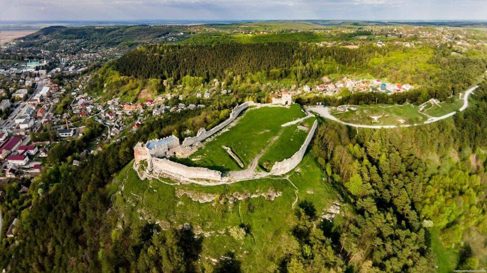
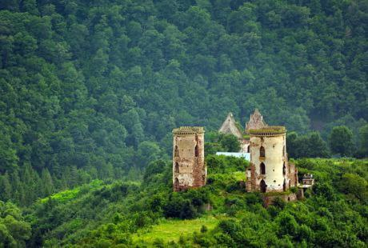

Тут оживає історія, природа і традиції нашого краю. Тернопільщина — це серце Західної України, де серед зелених пагорбів ховаються старовинні замки, мальовничі каньйони, тихі озера й гостинні міста. Кожне село має свою легенду, кожна стежка веде до відкриттів


Запрошуємо вас у подорож, що наповнить душу натхненням, а серце — любов’ю до цього дивовижного куточка України. Відкрийте для себе Тернопільщину — край, у який хочеться повертатися знову і знову!